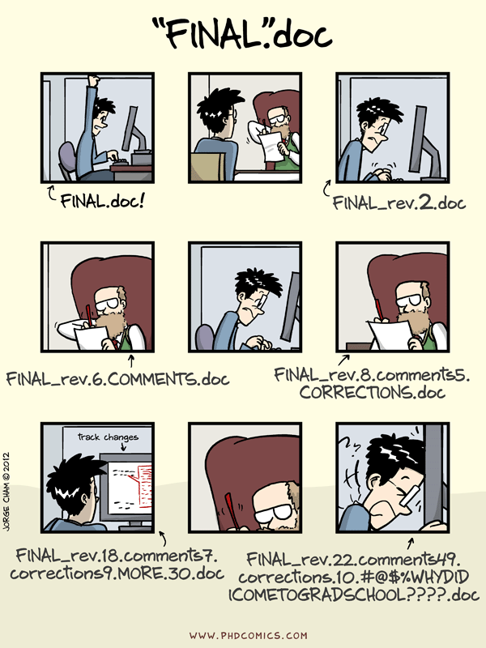
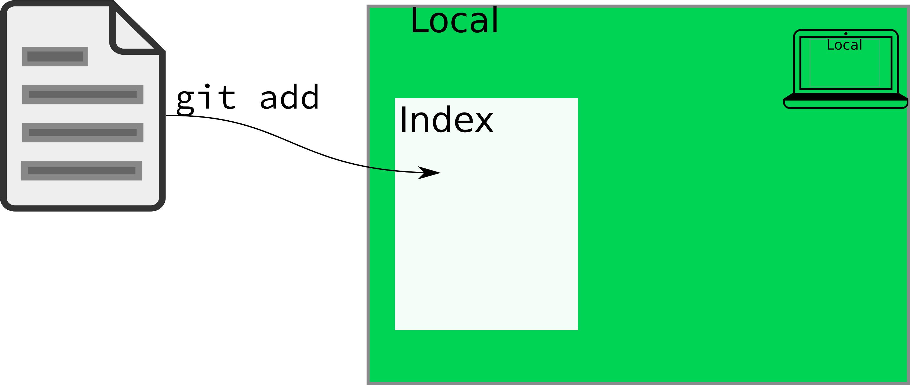
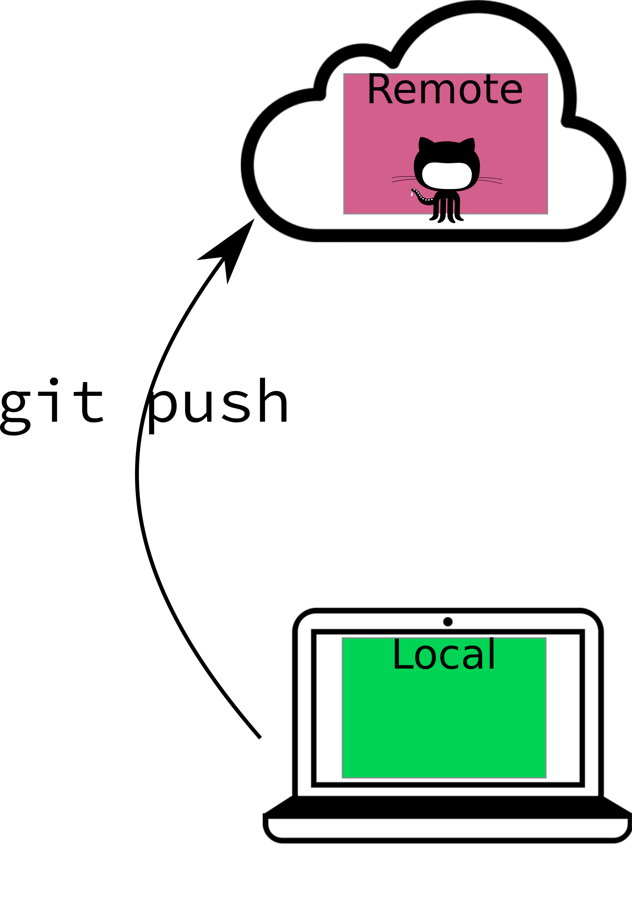
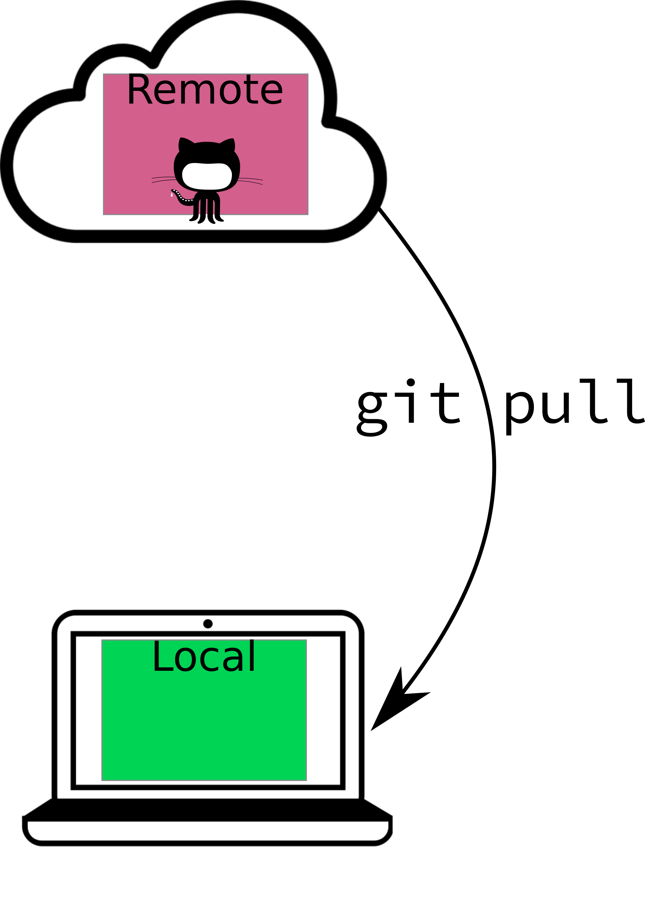

user_name <- readline(prompt = "Your full name: ")
user_email <- readline(prompt = "The address associated w your github account: ")
install.packages("usethis")
library(usethis)
use_git_config(user.name = user_name, user.email = user_email, scope = "user")
# Tell git to ignore all files that are OS-dependent and don't have useful data.
git_vaccinate()
# Create a ssh key if one doesn't already exist
if (!file.exists(git2r::ssh_path("id_rsa.pub"))) {
# Create an ssh key (with no password - less secure, but simpler)
system("ssh-keygen -t rsa -b 4096 -f ~/.ssh/id_rsa -q -N ''")
# Find the ssh-agent that will keep track of the password
system("eval $(ssh-agent -s)")
# Add the key
system("ssh-add ~/.ssh/id_rsa")
} 5 Version Control with Git
There is an entire textbook on how to use git and GitHub with R, Happy Git and Github for the UseR [1]. This chapter will liberally use chunks of that textbook, and rather than reproduce them here, I will simply link to the relevant sections.
5.1 Objectives
- Install git
- Create a github account
- Understand why version control is useful and what problems it can solve
- Understand the distinction between git and github, and what each is used for
- Use version control to track changes to a document (git add, commit, push, pull)
5.2 Installation
- Install git using the instructions here.
- Consult the troubleshooting guide if you have issues.
- If 1-2 fail, seek help in office hours.
Mac Warning
With each version upgrade, you may find that git breaks. To fix it, you will have to reinstall Mac command line tools. Once you do this, git will start working again. See [2] for more information.
5.2.1 Optional: Install a git client
I don’t personally use a git client other than RStudio, but you may prefer to have a client that allows you to use a point-and-click interface. It’s up to you.
5.3 What is Version Control ?
Note
Most of this section is either heavily inspired by Happy Git and Github for the UseR [1] or directly links to that book.
Git is a version control system - a structured way for tracking changes to files over the course of a project that may also make it easy to have multiple people working on the same files at the same time.

Git manages a collection of files in a structured way - rather like “track changes” in Microsoft Word or version history in Dropbox, but much more powerful.
If you are working alone, you will benefit from adopting version control because it will remove the need to add _final.R to the end of your file names. However, most of us work in collaboration with other people (or will have to work with others eventually), so one of the goals of this program is to teach you how to use git because it is a useful tool that will make you a better collaborator.
In data science programming, we use git for a similar, but slightly different purpose. We use it to keep track of changes not only to code files, but to data files, figures, reports, and other essential bits of information.
Git itself is nice enough, but where git really becomes amazing is when you combine it with GitHub - an online service that makes it easy to use git across many computers, share information with collaborators, publish to the web, and more. Git is great, but GitHub is … essential. In this class, we’ll be using both git and github, and your homework will be managed with GitHub Classroom.
5.3.1 Git Basics

Git tracks changes to each file that it is told to monitor, and as the files change, you provide short labels describing what the changes were and why they exist (called “commits”). The log of these changes (along with the file history) is called your git commit history.
When writing papers, this means you can cut material out freely, so long as the paper is being tracked by git - you can always go back and get that paragraph you cut out if you need to. You also don’t have to rename files - you can confidently save over your old files, so long as you remember to commit frequently.
Essential Reading: Git
The git material in this chapter is just going to link directly to the book “Happy Git with R” by Jenny Bryan. It’s amazing, amusing, and generally well written. I’m not going to try to do better.
Now that you have a general idea of how git works and why we might use it, let’s talk a bit about GitHub.
5.3.2 GitHub: Git on the Web
Set up a GitHub Account Now
Instructions for setting up a GitHub account.
Be sure you remember your signup email, username, and password - you will need them later.
Git is a program that runs on your machine and keeps track of changes to files that you tell it to monitor. GitHub is a website that hosts people’s git repositories. You can use git without GitHub, but you can’t use GitHub without git.
Git and Github: Slightly crude (but memorable) analogy
Git is to GitHub what Porn is to PornHub. Specifically, GitHub hosts git repositories publicly, while PornHub hosts porn publicly. But it would be silly to equate porn and PornHub, and it’s similarly silly to think of GitHub as the only place you can use git repositories.
If you want, you can hook Git up to GitHub, and make a copy of your local git repository that lives in the cloud. Then, if you configure things correctly, your local repository will talk to GitHub without too much trouble. Using Github with Git allows you to easily make a cloud backup of your important code, so that even if your computer suddenly catches on fire, all of your important code files exist somewhere else.
Remember: any data you don’t have in 3 different places is data you don’t care about.1
5.4 Using Version Control (with RStudio)
The first skill you need to actually practice in this class is using version control. By using version control from the very beginning, you will learn better habits for programming, but you’ll also get access to a platform for collaboration, hosting your work online, keeping track of features and necessary changes, and more.
So, what does your typical git/GitHub workflow look like? I’ll go through this in (roughly) chronological order. This is based off of a relatively high-level understanding of git - I do not have any idea how it works under the hood, but I’m pretty comfortable with the clone/push/pull/commit/add workflows, and I’ve used a few of the more complicated features (branches, pull requests) on occasion.
5.4.1 Introduce yourself to git and set up SSH authentication
You need to tell git what your name and email address are, because every “commit” you make will be signed. This needs to be done once on each computer you’re using.
Follow the instructions here, or run the lines below:
Note
The lines of code below use interactive prompts. Click the copy button in the upper right corner of the box below, and then paste the whole thing into the R console. You will see a line that says “Your full name:” - type your name into the console. Similarly, the next line will ask you for an email address.)
Then, in RStudio, go to Tools > Global Options > Git/SVN. View your public key, and copy it to the clipboard.
Then, proceed to github. Make sure you’re signed into GitHub. Click on your profile pic in upper right corner and go Settings, then SSH and GPG keys. Click “New SSH key”. Paste your public key in the “Key” box. Give it an informative title. For example, you might use 2022-laptop to record the year and computer. Click “Add SSH key”.
5.4.2 Create a Repository
Repositories are single-project containers. You may have code, documentation, data, TODO lists, and more associated with a project. If you combine a git repository with an RStudio project, you get a very powerful combination that will make your life much easier, allowing you to focus on writing code instead of figuring out where all of your files are for each different project you start.
To create a repository, you can start with your local computer first, or you can start with the online repository first.
Important
Both methods are relatively simple, but the options you choose depend on which method you’re using, so be careful not to get them confused.
5.4.2.1 Local repository first
Let’s suppose you already have a folder on your machine named hello-world-1 (you may want to create this folder now). You’ve created a starter document, say, a text file named README with “hello world” written in it.
If you want, you can use the following R code to set this up:
dir <- "./hello-world-1"
if (!dir.exists(dir)) {
dir.create(dir)
}
file <- file.path(dir, "README")
if (!file.exists(file)) {
writeLines("hello world", con = file)
}To create a local git repository, we can go to the terminal (in Mac/Linux) or the git bash shell (in Windows), navigate to our repository folder (not shown, will be different on each computer), and type in
git initAlternately, if you prefer a GUI (graphical user interface) approach, that will work too:
- Open Rstudio
- Project (upper right corner) -> New Project -> Existing Directory. Navigate to the directory.
- (In your new project) Tools -> Project options -> Git/SVN -> select git from the dropdown, initialize new repository. RStudio will need to restart.
- Navigate to your new Git tab on the top right.
The next step is to add our file to the repository.
Using the command line, you can type in git add README (this tells git to track the file) and then commit your changes (enter them into the record) using git commit -m "Add readme file".
Using the GUI, you navigate to the git pane, check the box next to the README file, click the Commit button, write a message (“Add readme file”), and click the commit button.
The final step is to create a corresponding repository on GitHub. Navigate to your GitHub profile and make sure you’re logged in. Create a new repository using the “New” button. Name your repository whatever you want, fill in the description if you want (this can help you later, if you forget what exactly a certain repo was for), and DO NOT add a README, license file, or anything else (if you do, you will have a bad time).
You’ll be taken to your empty repository, and git will provide you the lines to paste into your git shell (or terminal) – you can access this within RStudio, as shown below. Paste those lines in, and you’ll be good to go.
5.4.2.2 GitHub repository first
In the GitHub-first method, you’ll create a repository in GitHub and then clone it to your local machine (clone = create an exact copy locally).
GUI method:
- Log into GitHub and create a new repository
- Initialize your repository with a README
- Copy the repository location by clicking on the “Code” button on the repo homepage
- Open RStudio -> Project -> New Project -> From version control. Paste your repository URL into the box. Hit enter.
- Make a change to the README file
- Click commit, then push your changes
- Check that the remote repository (Github) updated
Command line method:
- Log into GitHub and create a new repository
- Initialize your repository with a README
- Copy the repository location by clicking on the “Code” button on the repo homepage
- Navigate to the location you want your repository to live on your machine.
- Clone the repository by using the git shell or terminal:
git clone <your repo url here>. In my case, this looks likegit clone git@github.com:stat850-unl/hello-world-2.git - Make a change to your README file and save the change
- Commit your changes:
git commit -a -m "change readme"(-a = all, that is, any changed file git is already tracking). - Push your changes to the remote (GitHub) repository and check that the repo has updated:
git push
5.4.3 Adding files
git add tells git that you want it to track a particular file.

You don’t need to understand exactly what git is doing on the backend, but it is important to know that the actual contents of the file aren’t logged by git add - you have to commit your changes for the contents to change. git add deals solely with the index of files that git “knows about”, and what it thinks belongs in each commit.
If you use the RStudio GUI for your git interface, you generally won’t have to do much with git add; it’s (sort-of, kind-of) equivalent to clicking the check box.
5.4.3.1 What files should I add to git?
Git is built for tracking text files. It will (begrudgingly) deal with small binary files (e.g. images, PDFs) without complaining too much, but it is NOT meant for storing large files, and GitHub will not allow you to push anything that has a file larger than 100MB2. Larger files can be handled with git-lfs (large file storage), but storing large files online is not something you can get for free.
In general, you should only add a file to git if you created it by hand. If you compiled the result, that should not be in the git repository under normal conditions (there are exceptions to this rule – this book is hosted on GitHub, which means I’ve pushed the compiled book to the GitHub repository).
You should also be cautious about adding files like .Rprog, .directory, .DS_Store, etc. These files are used by your operating system or by RStudio, and pushing them may cause problems for your collaborators (if you’re collaborating). Tracking changes to these files also doesn’t really do much good.
I highly recommend that you make a point to only add and commit files which you consciously want to track.
5.4.4 Staging your changes
In RStudio, when you check a box next to the file name in the git tab, you are effectively adding the file (if it is not already added) AND staging all of the changes you’ve made to the file. In practice, git add will both add and stage all of the changes to any given file, but it is also useful in some cases to stage only certain lines from a file.
More formally, staging is saying “I’d like these changes to be added to the current version, I think”. Before you commit your changes, you have to first stage them. You can think of this like going to the grocery store: you have items in your cart, but you can put them back at any point before checkout. Staging changes is like adding items to your cart; committing those changes is like checking out.
Individually staging lines of a file is most useful in situations where you’ve made changes which should be part of multiple commits. To stage individual lines of a file, you can use git add -i at the command line, or you can attempt to use RStudio’s “stage selection” interface. Both will work, though git can’t always separate changes quite as finely as you might want (and as a result, RStudio’s interface sometimes seems unresponsive, even though the underlying issue is with what git can do).
5.4.5 Committing your changes
A git commit is the equivalent of a log entry - it tells git to record the state of the file, along with a message about what that state means. On the back end, git will save a copy of the file in its current state to its cache.

In general, you want your commit message to be relatively short, but also informative. The best way to do this is to commit small blocks of changes. Work to commit every time you’ve accomplished a small task. This will do two things:
- You’ll have small, bite-sized changes that are briefly described to serve as a record of what you’ve done (and what still needs doing)
- When you mess up (or end up in a merge conflict) you will have a much easier time pinpointing the spot where things went bad, what code was there before, and (because you have nice, descriptive commit messages) how the error occurred.
5.4.6 Pushing and Pulling
When you’re working alone, you generally won’t need to worry about having to update your local copy of the repository (unless you’re using multiple machines). However, statistics is collaborative, and one of the most powerful parts of git is that you can use it to keep track of changes when multiple people are working on the same document.
If you are working collaboratively and you and your collaborator are working on the same file, git will be able to resolve the change you make SO LONG AS YOU’RE NOT EDITING THE SAME LINE. Git works based on lines of text - it detects when there is a change in any line of a text document.
For this reason, I find it makes my life easier to put each sentence on a separate line, so that I can tweak things with fewer merge conflicts. Merge conflicts aren’t a huge deal, but they slow the workflow down, and are best avoided where possible.
Pulling describes the process of updating your local copy of the repository (the copy on your computer) with the files that are “in the cloud” (on GitHub). git pull (or using the Pull button in RStudio) will perform this update for you. If you are working with collaborators in real time, it is good practice to pull, commit, and push often, because this vastly reduces the merge conflict potential (and the scope of any conflicts that do pop up).
Pushing describes the process of updating the copy of the repository on another machine (e.g. on GitHub) so that it has the most recent changes you’ve made to your machine.


In general, your workflow will be
- Clone the project or create a new repository
- Make some changes
- Stage the changes with git add
- Commit the changes with git commit
- Pull any changes from the remote repository
- Resolve any merge conflicts
- Push the changes (and merged files) with git push
If you’re working alone, steps 5 and 6 are not likely to be necessary, but it is good practice to just pull before you push anyways.
5.5 References
[1]
J. Bryan, J. Hester, and {The Stat 545 TAs}, Happy git and GitHub for the useR. 2021 [Online]. Available: https://happygitwithr.com/. [Accessed: May 09, 2022]
[2]
dustbuster, “Answer to "git is not working after macOS update (xcrun: Error: Invalid active developer path (/library/developer/CommandLineTools)". Stack overflow,” Sep. 26, 2018. [Online]. Available: https://stackoverflow.com/a/52522566/2859168. [Accessed: Jan. 13, 2023]